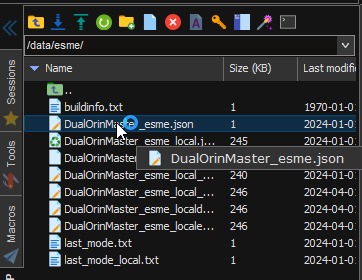
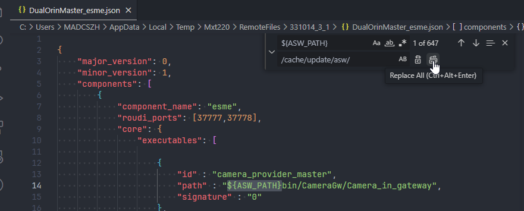
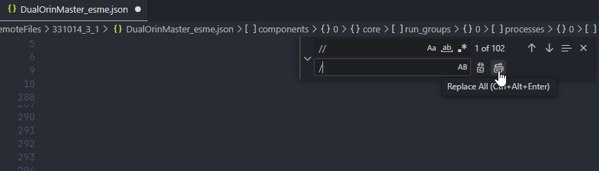

How to replace test binaries in board
At present, the main ORINX projects are ESME self -starting tests: that is, all software is activated, and the software directory is brushed in/asw/folder by default.
If you need to replace the temporary Binaries for testing, you need to perform the following methods.
Step1. Modify the default startup path of the software
The/asw/folder where the software is located is read only the directory. First of all, copy the/asw/folder to the readable and written directory/cache/update/
cp -r /asw/ /cache/update/The configuration script of ESME starts at /data/esme/dualorinmaster_esme.json, you need to modify this file

Open it with VSCODE, replace the global $ {asw_path} to/cache/update/asw/

Then search for double slope //, replace it global with a single slope/

Save the file, Restart and take effect 。
Step2. Replace binaries
We have several Binaries compiled.
Activity process Viperparking, replaced the compiled products to the/cache/update/asw/bin/directory of the board.
Note that if you copy from Windows to the board, pay attention Plate Modify executable permissions
chmod +x ViperParking_activity
The algorithm library SO file, put the SO that needs to be replaced to the/cache/update/asw/lib_w3/perception/
Model GIE file, which needs to be replaced Subdirectory Copy/update/asw/package/Parking_per/Config
Restart and take effect